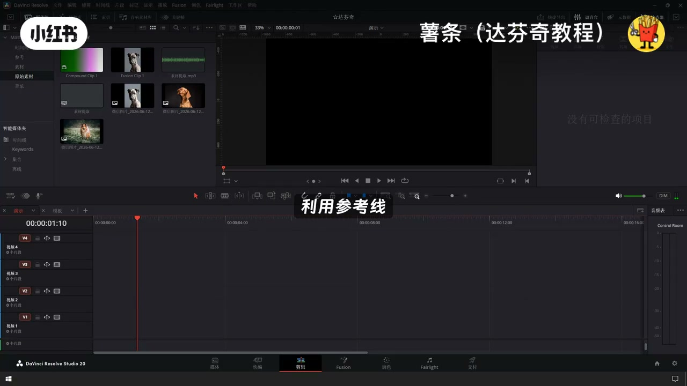
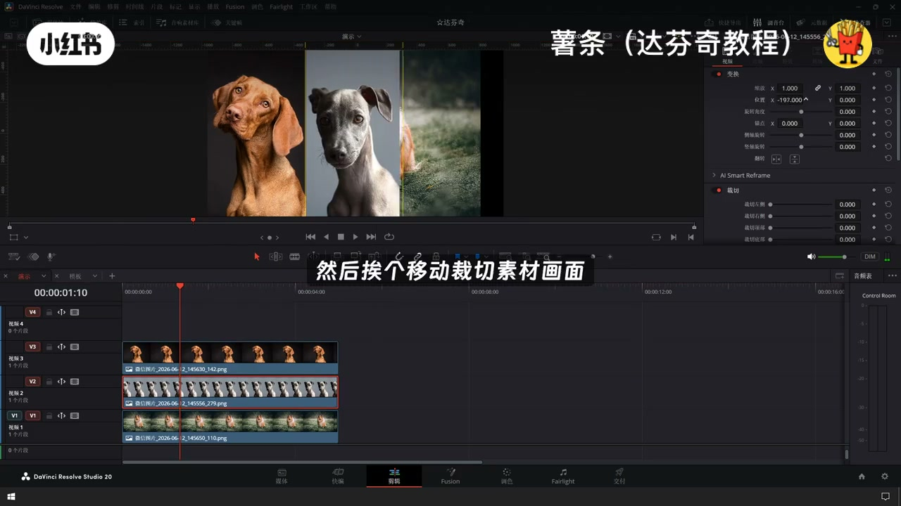
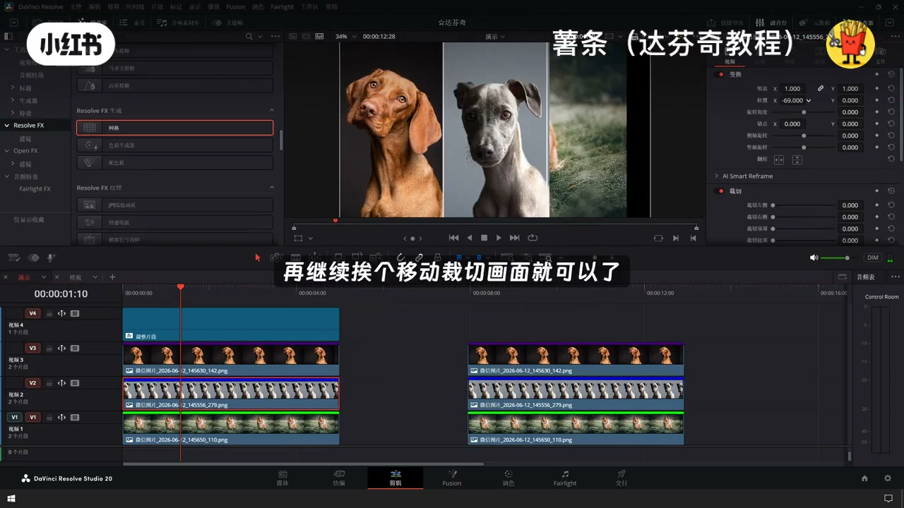
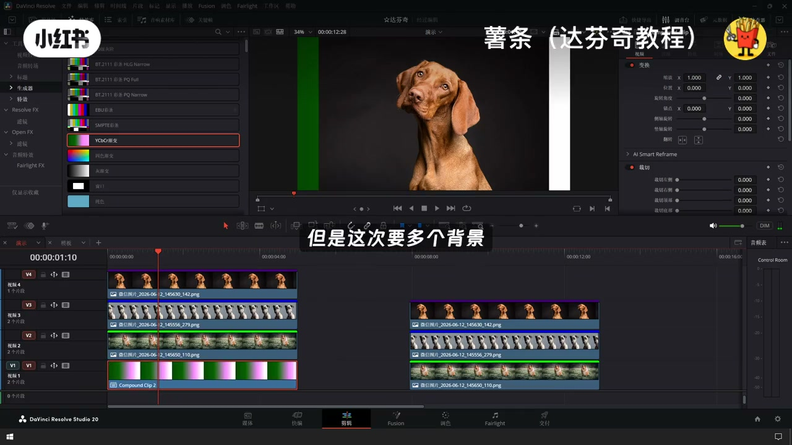
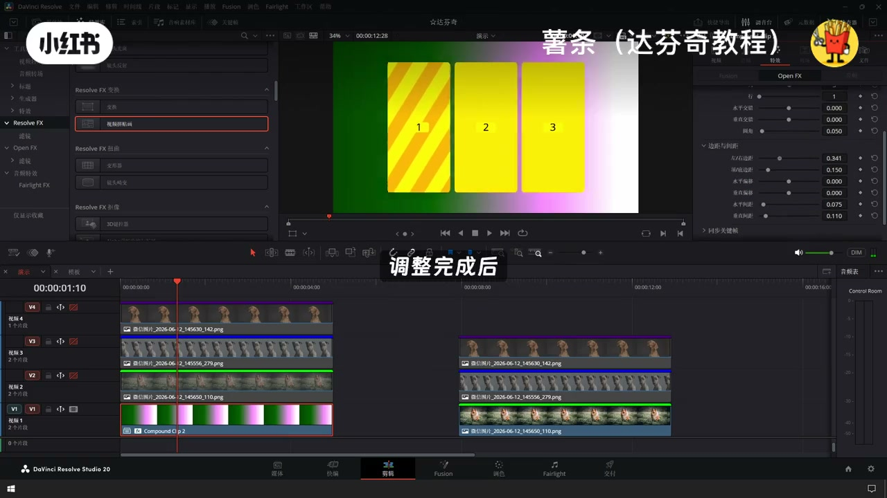
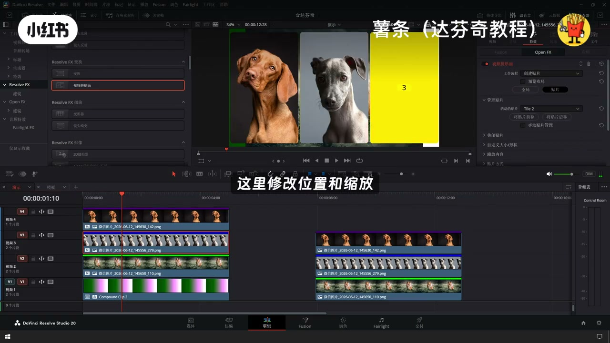
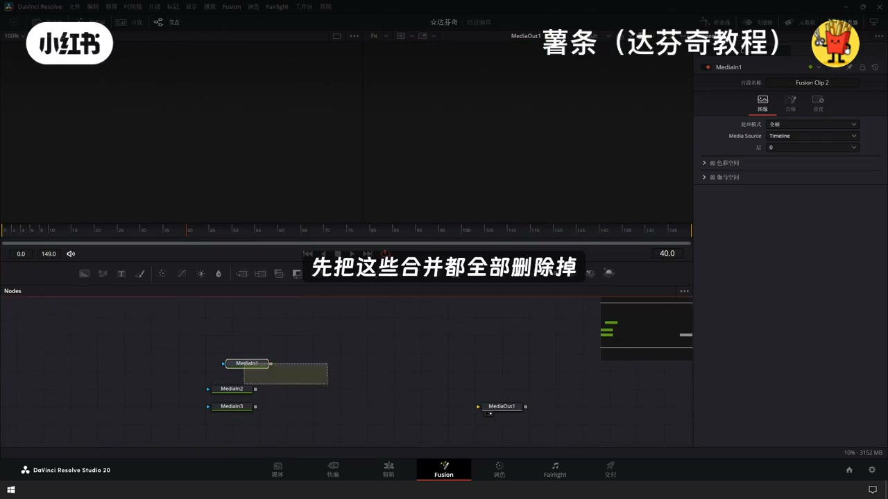
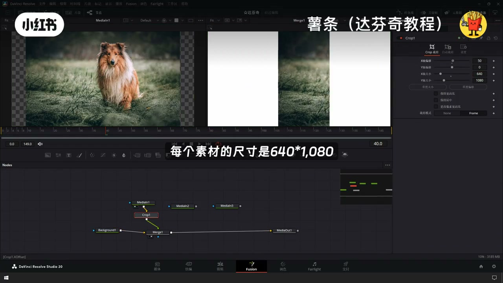

内容要点
「达芬奇分屏效果 达芬奇分屏 达芬奇分屏效果」教程要点：还在到处找达芬奇分评教程 → 今天一条视频讲完四种主流做法 → 看完直接上手 → 第一种方法,利用参考线…
知识结构
还在到处找达芬奇分评教程
今天我主要演示下基础的分评
剩余的几个画面也是一样的操作
- 还在到处找达芬奇分评教程
- 今天一条视频讲完四种主流做法
- 看完直接上手
- 第一种方法,利用参考线
- 首先将素材拖动到时间线上
还在到处找达芬奇分评教程
00:00–00:51还在到处找达芬奇分评教程
还在到处找达芬奇分评教程；今天一条视频讲完四种主流做法；看完直接上手；第一种方法,利用参考线；首先将素材拖动到时间线上；素材挨个叠在一起；在监视器右上角点击打开参考线；手动拖动标尺拉出参考线；或者点击参考线或者标尺精准定位；现在创建两条参考线作为三等分的参考；然后挨个移动裁切素材画面；就可以制作出分评的效果了；第二种方法,利用网格工具；先在最上层添加一个调整片段；给这个调整片段添加一个网格；调整尺寸和大小；就能轻松获得了一个三等分的画面；再继续挨个移动裁切画面就可以了；第三种方法,视频拼贴画；这是达芬奇里面专门实现一键分评；画中画的工具


00:49–01:31今天我主要演示下基础的分评
今天我主要演示下基础的分评；感兴趣的小伙伴；可以深入研究下；还是依次叠加,但是这次要多个背景；选中最底下这个背景；在特效库中找到视频拼贴画；拖动到背景上面；先进用上面的几个画面；勾选预留布局,选择全局；调整布局到我们需要的样式；这里可以调整的参数非常的丰富；而且都可以设置关键帧；调整完成后,复制粘贴插件属性；到上面几个画面上；再打开这个上面几个画面；工作流程修改为创建贴片；预览布局勾选取消；全局切换成贴片；活动贴片按照时间线摆放；切换成对应的数字；缩放内容这里修改位置和缩放


01:30–02:10剩余的几个画面也是一样的操作
剩余的几个画面也是一样的操作；第四种方法Fusion；打分器里面最强大的工具它来了；实现分屏也是相当的简单；选择所有片段；右键新键富威森片段；在富威森页面打开；为了简单明了；先把这些合并都全部删除掉；只保留着三个素材；再创建一个背景节点；将素材跟背景节点合并；这样就能看见素材在背景上面的样子了；可以看到背景的尺寸是1920x1080；那么三等分后；每个素材的尺寸是640x1080；可以直接使用裁切工具；把每个素材都先裁切到640x1080；最后在移动下位置就大功告成了




口述/画面要点（40段）
结合 Whisper medium 与画面大字整理；专有名词已校对。
还在到处找达芬奇分评教程
今天一条视频讲完四种主流做法
看完直接上手
第一种方法,利用参考线
首先将素材拖动到时间线上
素材挨个叠在一起
在监视器右上角点击打开参考线
手动拖动标尺拉出参考线
或者点击参考线或者标尺精准定位
现在创建两条参考线作为三等分的参考
然后挨个移动裁切素材画面
就可以制作出分评的效果了
第二种方法,利用网格工具
先在最上层添加一个调整片段
给这个调整片段添加一个网格
调整尺寸和大小
就能轻松获得了一个三等分的画面
再继续挨个移动裁切画面就可以了
第三种方法,视频拼贴画
这是达芬奇里面专门实现一键分评
画中画的工具
今天我主要演示下基础的分评
感兴趣的小伙伴
可以深入研究下
还是依次叠加,但是这次要多个背景
选中最底下这个背景
在特效库中找到视频拼贴画
拖动到背景上面
先进用上面的几个画面
勾选预留布局,选择全局
调整布局到我们需要的样式
这里可以调整的参数非常的丰富
而且都可以设置关键帧
调整完成后,复制粘贴插件属性
到上面几个画面上
再打开这个上面几个画面
工作流程修改为创建贴片
预览布局勾选取消
全局切换成贴片
活动贴片按照时间线摆放